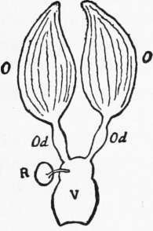

(1) The Male Eggs Are Not Fertilized
Description
This section is from the book "The Psychic Life Of Insects", by E. L. Bouvier. Also available from Amazon: The Psychic Life of Insects.
(1) The Male Eggs Are Not Fertilized
The theory clears up perfectly phenomena which had hitherto seemed inexplicable. It was already believed that the ovarian tubes contained male eggs and female eggs. Having realized that the queen lays only male eggs when her fecundation is delayed, also when her nuptial flight has been prevented by cutting off her wings, or again, when she was born at a time when the males had perished, the illustrious François Huber sought in vain for an explanation of these phenomena, and in despair cried, "It is an abyss in which I am lost!" But these facts are easily interpreted in the light of this theory. They have been further corroborated by Dzier-zon himself ; who found a simple clear liquid in the female receptacle (Figure 16, E) of a bumble-bee, and by Sei-bold (1856), who found no spermatozoa in the receptacle of a queen of this kind. The experiments of Berlepsch (1860) are no less favorable to this theory. When a queen has been subjected to an especial pinching of the abdomen, or has been exposed to a sufficiently intense cold, she lays male eggs continuously. In the first case it is probable that a lesion of the abdominal nerve centers prevents the seminal vesicle from opening and throwing the spermatozoa on the eggs. In the second, the spermatozoa contained in the vesicle are probably benumbed. In both the eggs deposited are parthenogenetic.
Fig. 16. Diagram of the genital organs of a wasp or a female bee: 0, ovarian tubes; Od, oviducts through which the eggs pass to gain the genital vestibule V; R, seminal receptacle in which the male spermatozoa accumulate at the instant of coupling; they enter or leave it by a narrow canal.
Direct observation proves also that male eggs are not fertilized. Seibold examined microscopically fifty-two eggs collected in worker cells and twenty-seven collected in male cells. The last never showed a trace of spermatic impregnation, while thirty of the former showed spermatozoa; he did not see them in the other twenty-two because his preparation was poor. The significant results were obtained by Paulcke (1899) and by Petrunkievitch (1901). These biologists examined under the microscope different kinds of eggs which had been sent them by Dickel, and they confirmed Seibold's observations in all points. Petrunkievitch could even recognize the original of each egg, although the labels had been changed. In spite of all this, the biologist Dickel (190).
Remains One Of the adversaries of the Dzierzon theory. He contends that the sex of the eggs is determined in the cell by a saliva peculiar to the workers. I have read DickePs memoir with care, and I confess that he has not convinced me, so vague and improbable are his experiments.
The following criticisms, on the other hand, merit attention. We know that in Europe there exist two quite distinct races of bees : the Italian bee which is yellow in color, and the [to France] indigenous bee, which is rather black. If it is true, as the theory suggests, that the male eggs are not fertilized, the effects of hybridization between the two races should be noticed only with the females, workers or queens. But this is not always so, as Dzierzon himself has noticed and as different biologists have proved; J. Perez, for example, who, having introduced into a hive of the pure native race deprived of all males a pure Italian female fertilized by an equally pure native male, afterward found in this hive 151 pure Italian males, 83 pure natives, and 66 with mixed characters, making in all 149 males having more or less the traits of the native male fertilizer.
These experiments cannot be cited against the theory, because they offer almost insurmountable difficulties which make them subject to criticism. Could not the males found by Perez have come from egg-laying workers'? And could not the native males have found their way into the hive? Who can say, moreover, that a queen is surely of pure race, and that the two races are not both the issue of a wild black bee long domesticated? According to this, the results observed by Perez would be simply due to atavism. One of the most distinguished American bee-keepers, E. R. Root (cited by Phillips'1) has stated some profound truths on this point. He says:
We have many times received from Italy queens supposed to be as pure as possible, but the males from these queens were of varied coloration. Some had a large amount of yellow, while others were completely black. If Perez had seen these males he would have concluded that certain ones were French, others German, and some Italian. . . . The pure Italian queens show all degrees of coloration, from bright yellow to jet-black. We obtained a very black daughter from an imported Italian queen, but the workers coming from this queen were of a uniform coloration, with all the characters of pure Italians. Some of the queens, daughters o»f the imported mother, are completely yellow and others completely black. . . .
The variations of color observed by Perez do not upset a theory which everything else confirms, at least in its essential principle, that it is the parthenogenetic nature of the eggs which produce males.
1 E. F. Phillips, A Review of Parthenogenesis, 1903. (Proc. Amer. Philos. Soc., v. 42, pp. 275-345).
Continue to:
- prev: Division Of The Sexes Among The Bees
- Table of Contents
- next: (2) Selective Power Of The Queen In The Division Of The Sexes